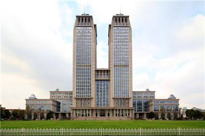

-
复旦大学光华楼
建筑图片

编辑 锁定
作为复旦跨入新世纪标志的复旦 百年第一楼———光华楼，被列为上海市 重大工程，是堪称国际一流的教学综合楼 。整幢楼高达142米，被誉为“中国高校第一楼”，造价约5.5亿人民币，建筑面积12万平方米，地上30层（除设备层），地下2层。其名称取自《尚书大传·虞夏传》 中的校名典出：“日月光华，旦复旦兮。”光华楼华贵典雅，突出了其作为复旦招牌的建筑特色。
- 中文名
- 光华楼
- 外文名
- Guanghua Town
- 名 称
- 复旦大学光华楼
- 所在地
- 上海市
- 动土时间
- 2002年12月
- 开放时间
- 2005年8月
- 用 途
- 综合教学楼
- 楼层数
- 30层
整幢楼高达142米，被誉为“中国高校第一楼”，造价约5.5亿人民币，建筑面积12万平方米，地上30层（除设备层），地下2层。其名称取自《尚书大传·虞夏传》中的校名典出：“日月光华，旦复旦兮。”和破旧的大一新生的宿舍相比，光华楼华贵典雅，突出了其作为复旦招牌的建筑特色。
光华楼主楼分别由东、西塔楼组成。西楼将以文史哲学科为主，东楼将由数学等理科学院入驻，其中囊括了教室、科研基地、办公区，也包括了学生广场和教师沙龙等师生交流场地，大大改善了教学科研条件。校方将为每位入驻的教授提供单独的办公室，每人拥有20平方米左右的办公面积，这甚至比校长等行政领导者15平方米的办公室还要大。两楼间有15层相连，为图书阅览室、资料室；裙楼对称，为各种类型的教室和报告厅。楼内现代化设施齐全，采用智能化管理，提升了为教学科研服务的质量。
光华楼外观形象生动，其新古典风格的建筑身姿挺拔，在茵茵绿草的映衬下，中间用透明球体连接的双楼建筑宛如旭日从山峰间升起，“双峰日出”，俨然成为复旦校园的一处人文胜景。从2002年12月奠基，到现在的落成，光华楼的建设一直得到
教育部、上海市委、市政府的关注和支持。它的诞生也标志着复旦大学在新世纪发展中的一个新高度、新起点。
据参考资料中网站所提供的排名（尚未更新），142米高的光华楼已经成为高度亚洲第一、世界第三的大学摩天楼。（前两名分别为240米的莫斯科国立大学和163米的匹兹堡大学）
此外，由于光华楼的高大，引起光华附近空气的对流强烈，春夏秋冬都可切身感受到强大的风流，俗称“光华妖风”。
1999年11月23日的《复旦青年》刊登出了一篇名为《校园三年大变样》的文章，王生洪校长透露，将在三年内在校内操场北面建设一栋在全国高校建筑中规模与功能都超前的智能化大楼。
2000年4月3日到4月13日的11天里，
邯郸校区本部东部规划八个概念设计方案的详图及1:500比例模型在逸夫科技楼底层展出，现场设置了师生投票箱。
2000年9月，在原三号方案基础上改进而成的最终方案得以确定。
2002年12月30日，光华楼正式动工。
2005年5月27日，百年校庆纪念日，光华楼落成典礼举行。
2005年9月24日，复旦百年校庆日。晚上19时，“日月光华盛大之夜——复旦大学建校一百周年庆典晚会”在灯火通明的光华楼前拉开了帷幕。
按其功能要求分为三大部分：塔楼部分为办公区，塔楼中间连接体为资料阅览、展览区；东侧裙房为接待、会议、科研区；西侧裙房为教学区，各自设单独的出入口，各部分既连为一体，又各自独立，可分可合。其中中部办公区为大楼主体，靠近主入口，且与其他各部分均有方便的联系。地下一、二层设大型停车库，以缓解学校停车难的问题。
复旦大学光华楼图册(4张)
此外，在满足办公、科研、教学、会议、接待等功能的前提下，考虑了较多的交流、休闲空间的设置。首先在中部二--三层设计了两层的共享空间，从主入口大台阶而上，进入共享空间，将端庄、凝重、严谨的治学精神延伸至室内，尺度阔大、气势恢宏。在主楼十三--十五层中部，设计了一个中庭，顶部设半圆形玻璃天顶采光，天光云影徘徊，体现了高楼中与自然亲密接触的愿望。东侧裙楼端设内庭，西侧裙楼三层屋顶上设屋顶花园。
光华楼选址非常讲究，极富特点。座落于邯郸校区的东北隅，朝南座北，与校园西部的数学楼（
子彬院）、中部的物理楼、连成一片，各成标志，分别体现着复旦百年发展的历史和轨迹。光华楼建筑面积12万平方米。地面30层、地下2层。整楼高达140.5米，因周遭少有“齐肩”高楼，故映衬着天际，有凌空出世之奇。再加上双子塔楼相依，两厢裙楼相辅，越发显得傲然挺拔，神采翩扬。光华楼是作为复旦跨入新世纪的标志，其意义相当深远。
2002年岁末，几经讨论的设计图纸，终于变成了现实。于是，奠基、开建，拉开建楼的序幕。寒来暑往，冬去春至。2004年5月，复旦九十九周年校庆之际，光华楼完成了结构封顶。按照时间节点，2005年5月完成主要部位的内外装饰，8月交付使用。
光华楼以其伟岸雄姿，屹立在复旦园中。无论是晨曦初现，还是夕阳西下，均平添起一处“光华旭阳”或“双楼望月”的校园胜境。同时，光华楼为申城杨浦增建了风格独特的全新景观、人文宏碑。
按照学校的规划定位，光华楼的西塔楼为文科各院系办公楼，东塔楼为理科有关院系办公楼；中间连接楼层为文、史、哲、数等院系的阅览资料室，师生同处，资源共享。两侧裙楼为各种类型的教室和报告厅。全楼分区设置空调系统，共有十四架电梯，轮番升降。网络通联，四通八达。光华楼全部智能化的操作与管理，从而提升了现代理念的高校设施，有效地为教学与科研服务。 [1]